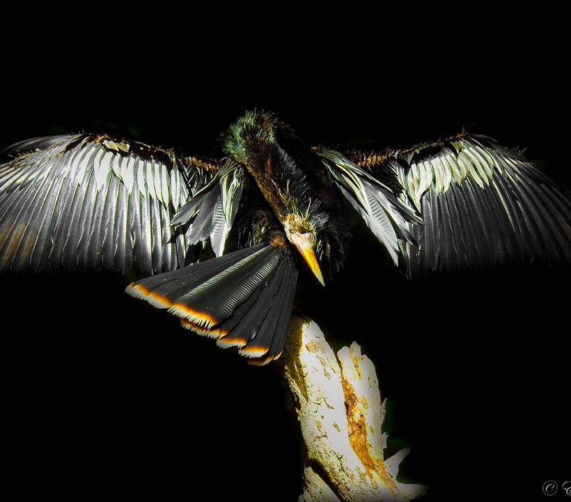
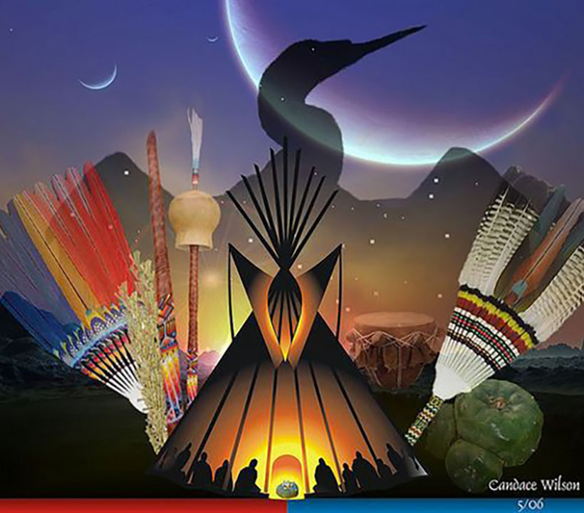
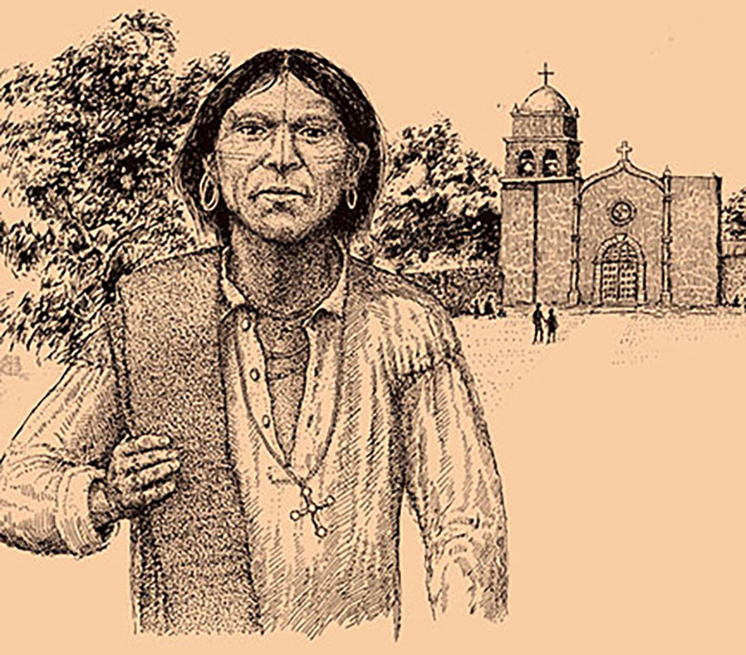

Coahuiltecans and the Anhinga
Leonard Crow Dog, the recently passed spiritual leader of the Lakota Tribe was known to have called the Anhinga the most important symbol of the Native American Church.

The Anhinga
The Anhinga, or Water Bird, is a symbol of the renewal of life, rainy seasons, rivers, distant travel, distant vision and wisdom. It is often also referred to as the Peyote Bird because of it's significants in the Native American Church Peyote meetings.

Native American Church
The Native American Church (NAC), also known as Peyotism and Peyote Religion, is a Native American religion that teaches a combination of traditional Native American beliefs and Christianity, with sacramental use of the entheogen peyote.

Coahuiltecan People
The Coahuiltecans, the largest Indian group living between the Rio Grande River and the headwaters of the San Antonio River, built the Alamo, and many of the missions of the Spanish Catholic Church. They imbedded their spiritual imagery like the Peyote Bird into colonial projects.
The inspiration for this project came from a discussion about land acknowledgment, which is often the final destination of honoring the displacement of Indigenous people-- but we knew more could be possible. Restorative justice must go beyond words and performance.
One of our team members on the project has been researching the history of their indigenous ancestors, their relation to their land and how it was taken from them, and contemporary movements to reclaim their place and culture. The visuals in our project represent the cultural traditions of this member’s ancestors, the Coahuiltecan people of what is now South Texas.
This project brings restorative justice to Indigenous people and other historically marginalized communities by inviting the public to find and acquire digital “fusion crystal“ shards, digital art objects minted as NFTs which represent fractional investments designed to activate the construction of massive augmented reality monuments. The funds collected directly benefit descendants of the original stewards of the land where the monument is located. As each shard is purchased, the monument takes form. Once a full set of shards have been acquired, the monument is activated, emerging from a geolocated quilt of these shards and appearing in it’s full and final form.